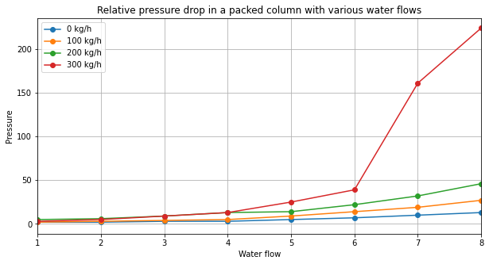
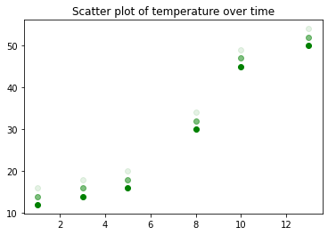

Data Visualization#
Visualizing data can be helpful on many occasions, such as investigating the data and its distribution, checking for outliers, evaluating results and more.
Here we visualize some experimental data in different plots and provide some code for the most common plot types used.
The matplotlib library provides a great starting point for learning how to visualize data in Python, you can find many more plot types here.
%matplotlib inline
import matplotlib.pyplot as plt
import pandas as pd
packed_column = pd.read_csv('packed_column.csv', encoding='utf-8', sep=';')
packed_column.head()
---------------------------------------------------------------------------
ModuleNotFoundError Traceback (most recent call last)
Cell In[1], line 1
----> 1 get_ipython().run_line_magic('matplotlib', 'inline')
2 import matplotlib.pyplot as plt
3 import pandas as pd
File ~\AppData\Local\miniconda3\envs\dig4bio\Lib\site-packages\IPython\core\interactiveshell.py:2480, in InteractiveShell.run_line_magic(self, magic_name, line, _stack_depth)
2478 kwargs['local_ns'] = self.get_local_scope(stack_depth)
2479 with self.builtin_trap:
-> 2480 result = fn(*args, **kwargs)
2482 # The code below prevents the output from being displayed
2483 # when using magics with decorator @output_can_be_silenced
2484 # when the last Python token in the expression is a ';'.
2485 if getattr(fn, magic.MAGIC_OUTPUT_CAN_BE_SILENCED, False):
File ~\AppData\Local\miniconda3\envs\dig4bio\Lib\site-packages\IPython\core\magics\pylab.py:103, in PylabMagics.matplotlib(self, line)
98 print(
99 "Available matplotlib backends: %s"
100 % _list_matplotlib_backends_and_gui_loops()
101 )
102 else:
--> 103 gui, backend = self.shell.enable_matplotlib(args.gui)
104 self._show_matplotlib_backend(args.gui, backend)
File ~\AppData\Local\miniconda3\envs\dig4bio\Lib\site-packages\IPython\core\interactiveshell.py:3665, in InteractiveShell.enable_matplotlib(self, gui)
3662 import matplotlib_inline.backend_inline
3664 from IPython.core import pylabtools as pt
-> 3665 gui, backend = pt.find_gui_and_backend(gui, self.pylab_gui_select)
3667 if gui != None:
3668 # If we have our first gui selection, store it
3669 if self.pylab_gui_select is None:
File ~\AppData\Local\miniconda3\envs\dig4bio\Lib\site-packages\IPython\core\pylabtools.py:338, in find_gui_and_backend(gui, gui_select)
321 def find_gui_and_backend(gui=None, gui_select=None):
322 """Given a gui string return the gui and mpl backend.
323
324 Parameters
(...)
335 'WXAgg','Qt4Agg','module://matplotlib_inline.backend_inline','agg').
336 """
--> 338 import matplotlib
340 if _matplotlib_manages_backends():
341 backend_registry = matplotlib.backends.registry.backend_registry
ModuleNotFoundError: No module named 'matplotlib'
Let’s start with a standard line plot.
# create a figure and set the figsize - you can play with the size until you are happy with the proportions
plt.figure(figsize=([10,5]))
# add four line plots, one for each water flow
plt.plot(packed_column['0 kg/h'], label='0 kg/h', marker='o')
plt.plot(packed_column['100 kg/h'], label='100 kg/h', marker='o')
plt.plot(packed_column['200 kg/h'], label='200 kg/h', marker='o')
plt.plot(packed_column['300 kg/h'], label='300 kg/h', marker='o')
# Add title, labels, legend and a grid
plt.title('Relative pressure drop in a packed column with various water flows')
plt.xlabel('Water flow')
plt.ylabel('Pressure')
plt.legend()
plt.grid()
# specify x axis range
plt.xlim([1, 8])
# show figure
plt.show()

Now let’s make a scatter plot.
We can specify many parameters, such as the color and the alpha (transparency).
time = [1, 3, 5, 8, 10, 13]
temperature = [12, 14, 16, 30, 45, 50]
# define type of plot - here we'll make a scatterplot
plt.scatter(time, temperature, alpha=1, color='green')
plt.scatter(time, [i+2 for i in temperature], alpha=0.5, color='green')
plt.scatter(time, [i+4 for i in temperature], alpha=0.1, color='green')
plt.title('Scatter plot of temperature over time')
plt.show()

Note, you can also use pandas functions for a quick plot, but for more elaborate and nice plots, matplotlib or similar libraries are recommended.
packed_column['100 kg/h'].hist()
<AxesSubplot:>

packed_column['100 kg/h'].plot()
<AxesSubplot:>
packed_column[['0 kg/h', '100 kg/h', '200 kg/h', '300 kg/h']].iloc[:-1, :].boxplot()
<AxesSubplot:>